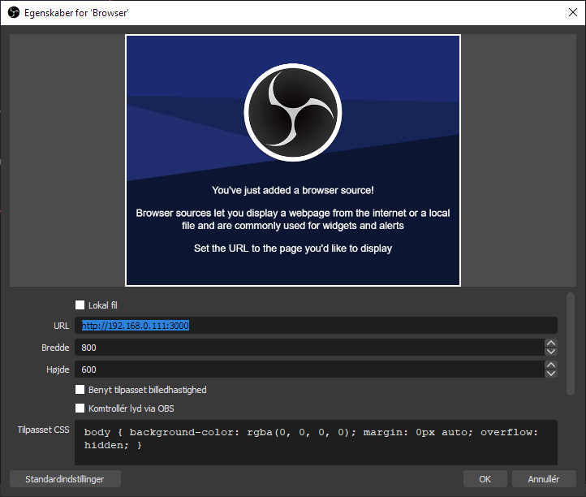

Panels
Scoreboard
Hvis der er flere er det højst sandsynligt den øverste,
prøv en af de andre hvis det ikke virker.
Score panels
Hvis der er flere er det højst sandsynligt den øverste,
prøv en af de andre hvis det ikke virker.
For at få scoreboardet ind i OBS skal du oprette en Browser source.

I URL feltet skal du indtaste addressen fra ovenover. Her kan du også ændre på størrelsen af scoreboardet. Det er bedre at gøre den lidt for stor her og sætte skrift størrelsen op under indstillinger i kontrol panelet, og så ikke hive den størrer når den er kommet ind på skærmen i OBS.
For at undgå at det bliver pixeleret er det bedst ikke at gøre den alt for stor her, men bruge højde og bredte i egenskaber. Her kan du også rykke rundt på scoreboardet, for at placere den det rigtige sted på skærmen.